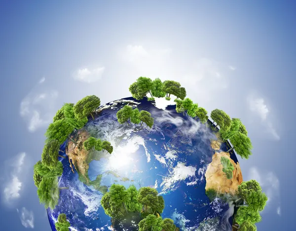
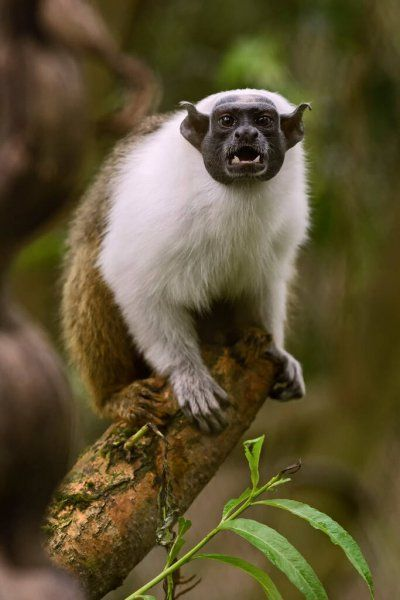

Hakkında
Güneş sistemi içerisinde Güneş'e en yakın gezegen olan Dünya, içinde hayatın ve sıvı suyun barındığı tek astronomik cisim olarak bilinmektedir. Dünya'nın tek doğal uydusu Ay'dır. Dünya, diğer gezegenlere göre kayaç yapılı olmasıyla dikkat çekmektedir. %29'u kıtalar ve adalardan oluşan Dünya'nın %71'i ise okyanus, göl, tatlı sular ve nehirlerden meydana gelmektedir. Radyometrik tarihlemeye göre 4,5 milyardan daha önce oluşan Dünya, yer çekimi sayesinde Güneş ve Ay ile etkileşime girmektedir. Güneş etrafında 365, 256 Güneş günü kadar dönen Dünya, kendi etrafında ise 366,265 defa dönmektedir.
Nasıl Oluştu
Yaşamın bulunduğu tek gezegen olarak bilinen Dünya, içinde yaşadığımız küre olduğu için nasıl oluştuğu merak uyandırıyor. Bundan 4,5 yıldan daha öncesinde oluşan Dünya, Güneş'ten kopan bir parçanın yörüngede soğumasıyla birlikte meydana gelmiştir. Güneş sisteminde yer alan gezegenlerin oluşumları sürdüğünden dolayı birçok çarpışmaların yaşandığı dönemde Dünya'da bundan nasibini almıştır. Bu çarpışmalar sayesinde Dünya, Güneş'ten kopan diğer parçalar ile birleşerek büyümüştür. Göktaşı ile çarpışan Dünya, buzlar, metaller ve silikat yapıları bünyesine almıştır. Bu sayede nikel ve demir elementleriyle Dünya'nın çekirdeği oluşmuştur. Çekirdeğin oluşmasından milyarlarca sonra okyanus ve kara parçaları oluşmuş ve gök taşlarıyla birlikte günümüz halini almaya başlamıştır.

Özellikleri
Güneş'e en yakın üçüncü gezegen olarak bilinen Dünya'nın en önemli özelliği arasında yaşamın yer alması gelmektedir. Ekvator çapı 12104 km, kutup çapı 12104 km, ekvatoral çevresi 38025 km olan Dünya'nın, kutuplardan basık, ekvatordan şiş olduğu için şekli geoittir. Yarı çapı 6371 km olan Dünya'nın kütlesi ise 5,97237×1024 kilogramdır. Dünya çekirdeği nikel ve demirden oluştuğundan dolayı güçlü manyetik bir alana sahiptir. Bu sebeple Güneş rüzgarlarından korunmaktadır.
Dünya'nın tek uydusu Ay'dır ve hem kendi etrafında hem de Güneş etrafında dönmektedir. Kendi etrafındaki turunu 23 saat 56 dakika 4 saniyede, Güneş etrafındaki turunu ise 365.25 günde tamamlamaktadır. Atmosferinin içinde %78 azot, %21 oksijen ve diğer gazların barındığı Dünya, uzaydan mavi renkte görünmektedir. Güneş'e olan uzaklığı 150 milyon kilometre olan Dünya, 23.4 derece eksen eğikliğine sahiptir. Bu eğiklik sebebiyle Güneş ışınlarının geliş açısı değişmektedir. Bu sayede mevsimlerin döngüsü ortaya çıkmaktadır.
Dünya, 5 katmandan oluşmaktadır. Bunlar; iç çekirdek ve dış çekirdek, ateş küre, hava küre, taş küre, su küredir.
İç çekirdek ve dış çekirdek (barisfer): Dünya'nın merkezini oluşturmaktadır. İç çekirdek katı halde yer alırken dış çekirdek ise magma denilen sıvı haldedir. Bu çekirdekler görünmez, sadece Dünya'nın merkezine gidildikçe hissedilmektedir.
Ateş küre (pirosfer): Yer kabuğu ve çekirdek arasında bulunan ateş küre, magmanın bulunduğu katmandadır. Oldukça sıcak olan ateş kürenin yüzeyinde depremler gerçekleşir.
Hava küre (atmosfer): Dünya'yı saran ve büyük bir bölümünü oluşturan hava küre yaşamak için gerekli olan gazları bünyesinde barındırır. Azot gazının çok olduğu bu katmanda kendi içinde katmanlara ayrılmaktadır. Bunlar; troposfer, stratosfer, mezosfer, termosfer ve ekzosferdir.
Taş küre (litosfer): Dünya zemininin %25'ini kapsayan taş küre, kara canlılarının yaşadığı katmandır. Yer kabuğunu oluşturan bu tabaka, Dünya'nın en sert ve en dış katmanıdır.
Su küre (hidrosfer): Dünya'nın %75'ini kapsayan su, yer yüzünde en çok bulunan maddedir.
